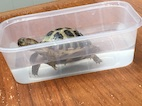

funny Charlie
2 funny things About Charlie.
- Eat poo
- Try to climb pots
More fun things.
Charlie dug so deep he reached the bottom of his Home
He winks/blink at you.
bath and food
Belive it or not Charlie can have a bath. Amazing!
You can feed Charlie like a Horse.

